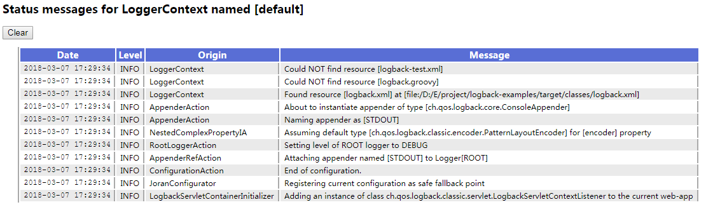
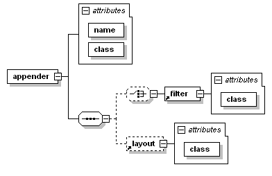

我们开始通过多种配置 logback，以及许多示例的配置脚本。logback 依赖的配置框架 - Joran 将会在之后的章节介绍
配置 logback
在应用程序当中使用日志语句需要耗费大量的精力。根据调查，大约有百分之四的代码用于打印日志。即使在一个中型应用的代码当中也有成千上万条日志的打印语句。考虑到这种情况，我们需要使用工具来管理这些日志语句。
可以通过编程或者配置 XML 脚本或者 Groovy 格式的方式来配置 logback。对于已经使用 log4j 的用户可以通过这个 工具 来把 log4j.properties 转换为 logback.xml。
以下是 logback 的初始化步骤：
- logback 会在类路径下寻找名为 logback-test.xml 的文件。
- 如果没有找到，logback 会继续寻找名为 logback.groovy 的文件。
- 如果没有找到，logback 会继续寻找名为 logback.xml 的文件。
- 如果没有找到，将会通过 JDK 提供的 ServiceLoader 工具在类路径下寻找文件
META-INFO/services/ch.qos.logback.classic.spi.Configurator，该文件的内容为实现了Configurator接口的实现类的全限定类名。 - 如果以上都没有成功，logback 会通过 BasicConfigurator 为自己进行配置，并且日志将会全部在控制台打印出来。
最后一步的目的是为了保证在所有的配置文件都没有被找到的情况下，提供一个默认的（但是是非常基础的）配置。
如果你使用的是 maven，你可以在 src/test/resources 下新建 logback-test.xml。maven 会确保它不会被生成。所以你可以在测试环境中给配置文件命名为 logback-test.xml，在生产环境中命名为 logback.xml。
FAST START-UP Joran 解析给定的配置文件大概需要耗费 100 毫秒。为了减少应用程序启动时的时间，你可以使用 ServiceLoader 来加载自定义的 Configurator，并使用 BasicConfigurator 作为一个好的起点（个人的理解是通过继承这个类）。
自动配置 logback
最简单的方式配置 logback 是让它去加载默认的配置。例：
1 | package chapters.configuration; |
Foo 的代码如下：
1 | package chapters.configuration; |
假设配置文件 logback-test.xml 或者 logback.xml 不存在，logback 会调用 BasicConfigurator 进行最小的配置。最小的配置包含一个附加到 root logger 上的 ConsoleAppender，格式化输出使用 PatternLayoutEncoder 对模版 %d{HH:mm:ss.SSS} [%thread] %-5level %logger{36} - %msg%n 进行格式化。root logger 默认的日志级别为 DEBUG。
所以，MyApp1 的输出信息如下：
1 | 16:59:20.161 [main] INFO chapters.configuration.MyApp1 - Entering application. |
MyApp1 通过调用 org.slf4j.LoggerFactory 与 org.slf4j.Logger 这两个类与 logback 相关联，并检索会用到的 logger。除了配置 logback 的代码，客户端的代码不需要依赖 logback，因为 SLF4J 允许在它的抽象层下使用任何日志框架，所以非常容易将大量代码从一个框架迁移到另一个框架。
使用 logback-test.xml 或 logback.xml 自动配置
下面的配置等同于通过 BasicConfigurator 进行配置。
1 | <configuration> |
你需要将上面的配置文件命名为 logback.xml 或 logback-test.xml
运行 MyApp1，你将会看到相同的结果（你要是不相信，你可以更改模版，看是否生效）。
在警告或错误的情况下自动打印状态信息
如果在解析配置文件的过程当中发生了错误，logback 会在控制台打印出它的内部状态数据。如果用户明确的定义了状态监听器，为了避免重复，logback 将不会自动打印状态信息。
在没有警告或错误的情况下，如果你想查看 logback 内部的状态信息，可以通过 StatusPrinter 类来调用 print() 方法查看具体的信息。
在 MyApp1 的基础上添加两行代码，并命名为 MyApp2
1 | package chapters.configuration; |
输出信息如下：
1 | 17:56:47,130 |-INFO in ch.qos.logback.classic.LoggerContext[default] - Could NOT find resource [logback-test.xml] |
在输出信息中，可以清楚的看到内部的状态信息，又称之为 Status 对象，可以很方便的获取 logback 的内部状态。
状态数据
你可以通过构造一个配置文件来打印状态信息，而不需要通过编码的方式调用 StatusPrinter 去实现。只需要在 configuration 元素上添加 debug 属性。配置文件如下所示。
注意：debug 属性只跟状态信息有关，并不会影响 logback 的配置文件，也不会影响 logger 的日志级别。
Example: sample1.xml
1 | <configuration debug="true"> |
需要将 sample1.xml 改名为 logback.xml 或 logback-test.xml，不然 logbak 找不到配置文件。以后这种情况不再重复申明。
如果配置文件的配置有问题，logback 会检测到这个错误并且在控制台打印它的内部状态。但是，如果配置文件没有被找到，logback 不会打印它的内部状态信息，因为没有检测到错误。通过编码方式调用 StatusPrinter.print() 方法会在任何情况下都打印状态信息。
强制输出状态信息：在缺乏状态信息的情况下，要找一个有问题的配置文件很难，特别是在生产环境下。为了能够更好的定位到有问题的配置文件，可以通过系统属性 logback.statusListenerClass 来设置 StatusListener 强制输出状态信息。系统属性 logback.statusListenerClass 也可以用来在遇到错误的情况下进行输出。
设置 debug="true" 完全等同于配置一个 OnConsoleStatusListener 。具体示例如下：
Example: onConsoleStatusListener.xml
1 | <configuration> |
设置 debug="true" 与配置 OnConsoleStatusListener 的效果完全一样。
通过系统属性指定默认的配置文件
通过系统属性 logback.configurationFile 可以指定默认的配置文件的路径。它的值可以是 URL，类路径下的文件或者是应用外部的文件。
1 | java -Dlogback.configurationFile=/path/to/config.xml chapters.configuration.MyApp1 |
注意：文件类型只能是 “.xml” 或者 “.groovy”，其它的拓展文件将会被忽略。
因为 logback.configureFile 是一个系统属性，所以也可以在应用内进行设置。但是必须在 logger 实例创建前进行设置。
1 | import org.slf4j.Logger; |
当配置文件更改时，自动加载
为了让 logback 能够在配置文件改变的时候自动去扫描，需要在 <configuration> 标签上添加 scan=true 属性。
Example
1 | <configuration scan="true"> |
默认情况下，一分钟扫描一次配置文件，看是否有更改。通过 <configuration> 标签上的 scanPeriod 属性可以指定扫描周期。扫描周期的时间单位可以是毫秒、秒、分钟或者小时。
Example：
1 | <configuration scan="true" scanPeriod="30 seconds"> |
注意：如果没有指定时间单位，则默认为毫秒。
当设置了 scan="true"，会新建一个 ReconfigureOnChangeTask 任务用于监视配置文件是否变化。ReconfigureOnChangeTask 也会自动监视外部文件的变化。
如果更改后的配置文件有语法错误，则会回退到之前的配置文件。
在堆栈中展示包数据
注意：在 1.1.4 版本中，展示包数据是默认被禁用的。
如果启用了展示包数据，logback 会在堆栈的每一行显示 jar 包的名字以及 jar 的版本号。展示包数据可以很好的解决 jar 版本冲突的问题。但是，这个的代价比较高，特别是在频繁报错的情况下。
Example：
1 | 14:28:48.835 [btpool0-7] INFO c.q.l.demo.prime.PrimeAction - 99 is not a valid value |
启用展示包数据：
1 | <configuration packagingData="true"> |
直接调用 JoranConfigurator
Logback 依赖的配置文件库为 Joran，是 logback-core 的一部分。logback 的默认配置机制为：通过 JoranConfigurator 在类路径上寻找默认的配置文件。你可以通过直接调用 JoranConfigurator 的方式来重写 logback 的默认配置机制。
Example：直接调用 JoranConfigurator
1 | package chapters.configuration; |
注意：对于多个步骤的配置，context.reset() 不需要调用。
查看内部状态信息
logback 通过 StatusManager 的对象来收集内部的状态信息，这个对象可以通过 LoggerContext 来获取。
对于一个给定的 StatusManager，你可以获取 logback 上下文所有的状态信息。为了保持内存的使用在一个合理的水平，StatusManager 的默认实现包含两个部分：头部与尾部。头部存储第一个 H 状态的消息，尾部存储最后一个 T 状态的消息。目前 H=T=150，这个值在以后可能会改变。
logback-classic 包含一个名叫 ViewStatusMessagesServlet 的 servlet。这个 servlet 打印当前 LoggerContext 的 StatusManager 的内容，通过 html 进行输出。
Example：

在 WEB-INF/web.xml 中添加如下代码：
1 | <servlet> |
然后可以通过 http://host/yourWebapp/lbClassicStatus 进行访问。
监听状态信息
通过给 StatusManager 附加一个 StatusListener，可以对状态信息进行获取。特别是在配置好 logback 之后。注册一个状态监听器可以很方便的监听 logback 的内部状态，并且不需要人工的干预。
StatusListener 有一个名为 OnConsoleStatusListener 的实现类，可以将状态信息在控制台打印出来。
Example：
1 | public class AddStatusListenerApp { |
注意：注册的状态监听器只会获取注册之后产生的状态消息，而不会获取注册之前产生的消息。所以建议在最开始的时候直接进行配置。
可以在配置文件中配置多个状态监听器。
Example：
1 | <configuration> |
系统属性 logback.statusListenerClass
通过设置 java 的系统属性来配置状态监听器。
Example：
1 | java -Dlogback.statusListenerClass=ch.qos.logback.core.status.OnConsoleStatusListener |
logback 子级实现了几个监听器。OnConsoleStatusListener 用于在控制台打印状态消息。OnErrorConsoleStatusListener 用于在控制台打印显示错误的状态信息。NopStatusListener 会丢弃掉状态信息。
注意：在配置期间，任何的状态监听器被注册，或者通过 java 系统变量指定
logback.statusListenerClass的值，在警告或错误的情况下自动打印状态信息 将会被禁用。
可以通过设置 java 系统变量 logback.statusListenerClass 的值来禁用一切状态信息的打印。
1 | java -Dlogback.statusListenerClass=ch.qos.logback.core.status.NopStatusListener |
停止 logback-classic
为了释放 logback-classic 所使用的资源，停止使用 logger context 是一个好注意。停止 context 将会关闭所有在 logger 上定义的 appender，并且有序的停止正在活动的线程。
1 | import org.sflf4j.LoggerFactory; |
上面的代码在 web 应用中，通过调用 ServletContextListener 的 contextDestroyed 方法来停止 logback-classic 并释放资源。1.1.10 版本后，ServletContextListener 会被自动加载。
通过 shutddown hook 停止 logback-classic
个人觉得 hook 可以理解为钩子或者开关，但是还是觉得照写会更好理解一点。
指定一个 JVM shutdown hook 可以非常方便的关闭 logback 并释放资源。
1 | <configuration debug="true"> |
注意：可以通过 class 属性指定一个 shutdown hook 的名字。
默认的 shutdown hook 为 DefaultShutdownHook，在一个指定的时间后（默认是 0）会停掉 context。但是允许 context 在 30s 内完成日志文件的打包。在独立的 java 应用程序中，在配置文件中添加 <shutdownHook/> 可以确保任何日志打包任务完成之后，JVM 才会退出。在 web 应用程序中，webShutdownHook 会自动安装，<shutdownHook/> 将会变的多余且没有必要。
在 web 应用中使用 WebShutdownHook 停止 logback-classic
SINCE 1.1.10 logback-classic 会自动要求 web 服务安装 LogbackServletContainerInitializer（实现了 ServletContainerInitializer 接口，在 servlet-api 3.x 或以后的版本才有效）。这个初始化程序将会依次实例化 LogbackServletContextListener 的实例。在 web 应用停止或者重载的时候会停掉当前 logback-classic 的 context。
我表示不是很懂这种做法有何意义，难道应用都停止了，context 还会在运行？这就是作者说的非常多余跟没有必要吗？
可以在 web.xml 中禁止 LogbackServletContextListener 的实例化。
Example：
1 | <web-app> |
logbackDisableServletContainerInitializer 也可以通过 java 系统属性或者系统的环境变量来设置。优先级为：web 应用 > java 系统属性 > 系统环境变量
配置文件的语法
logback 允许你重新定义日志的行为而不需要重新编译代码，你可以轻易的禁用掉应用中某些部分的日志，或者将日志输出到任何地方。
logback 的配置文件非常的灵活，不需要指定 DTD 或者 xml 文件需要的语法。但是，最基本的结构为 <configuration> 元素，包含 0 或多个 <appender> 元素，其后跟 0 或多个 <logger> 元素，其后再跟最多只能存在一个的 <root> 元素。基本结构图如下：

标签名大小写敏感
在 logback 版本 0.9.17 之后，显示规定的标签名不区分大小写。例如：<logger>、<Logger、<LOGGER> 这些都是有效的标签名。xml 风格的规则仍然适用。如果你有一个开始标签为 <xyz>，那么必须要有一个结束标签 </xyz>。</XyZ> 则是错误的。根据 Implicit actions，标签名字是大小写敏感的，除了第一个字母。所以，<xyz> 与 <Xyz> 是一样的，但是 <xYz> 是错误的。默认规则遵循驼峰命名法。很难说清楚一个标签遵循什么规则，如果你不知道给定的标签遵循哪种规则，那么使用驼峰命名法总是正确的。
配置 logger
通过 <logger> 标签来过 logger 进行配置，一个 <logger> 标签必须包含一个 name 属性，一个可选的 level 属性，一个可选 additivity 属性。additivity 的值为 true 或 false。level 的值为 TRACE，DEBUG，INFO，WARN，ERROR，ALL，OFF，INHERITED，NULL。当 level 的值为 INHERITED 或 NULL 时，将会强制 logger 继承上一层的级别。
<logger> 元素至少包含 0 或多个 <appender-ref> 元素。每一个 appender 通过这种方式被添加到 logger 上。与 log4j 不同的是，logbakc-classic 不会关闭或移除任何之前在 logger 上定义好的的 appender。
配置 root logger
root logger 通过 <root> 元素来进行配置。它只支持一个属性——level。它不允许设置其它任何的属性，因为 additivity 并不适用 root logger。而且，root logger 的名字已经被命名为 “ROOT”，也就是说也不支持 name 属性。level 属性的值可以为：TRACE、DEBUG、INFO、WARN、ERROR、ALL、OFF，但是不能设置为 INHERITED 或 NULL。
跟 <logger 元素类似，<root> 元素可以包含 0 或多个 <appender-ref> 元素。
例子
如果我们不想看到属于 chapters.configuration 组件中任何的 DEBUG 信息。
Example：sample2.xml
1 | <configuration> |
运行 MyApp3，可以看到如下的输出信息：
1 | 21:52:48.726 [main] INFO chapters.configuration.MyApp3 - Entering application |
可以看到，“chapters.configuration.Foo” 类中的 debug 信息没有被输出。
你可以配置任何 logger 的日志级别。在下一个例子中，我们设置 chapters.configurations 的 logger 日志级别为 INFO，同时设置 chapters.configuration.Foo 的 logger 日志级别为 DEBUG。
Example：sample3.xml
1 | <configuration> |
运行 MyApp3 可以看到如下的输出信息：
1 | 22:06:43.500 [main] INFO chapters.configuration.MyApp3 - Entering application |
下面的表格列出了 JoranConfigurator 通过 sample3.xml 配置 logback 后，logger 以及其对应的日志级别。
| Logger name | 指定级别 | 有效级别 |
|---|---|---|
| root | DEBUG | DEBUG |
| chapters.configuration | INFO | INFO |
| chapters.configuration.MyApp3 | null | INFO |
| chapters.configuration.Foo | DEBUG | DEBUG |
MyApp3 类中的两条日志消息的级别都为 INFO，Foo.doIt() 中的 DEBUG 信息也能够进行输出。
注意：root logger 的日志级别永远不会设置成一个非空的值，默认是 DEBUG。
基本选择法 依赖被调用 logger 的有效日志级别，而并不是 appender 所依附的 logger 的级别。logback 会首先判断日志语句是否可以被打印，如果可以，则会在 logger 的层级结构中查找 appender，而不管它们的级别如何（表示很费解，appender 本来就没有日志级别，为什么会关 appender 的事？）。下面的例子说明了这一点。
Example：sample4.xml
1 | <configuration> |
如下表格展示了应用 sample4.xml 之后的各 logger 的日志级别。
| logger name | 分配级别 | 有效级别 |
|---|---|---|
| root | OFF | OFF |
| chapters.configuration | INFO | INFO |
| chapters.configuration.MyApp3 | null | INFO |
| chapters.configuration.Foo | null | INFO |
ConsoleAppender 的名字为 STDOUT，sample4.xml 中唯一的 appender，它所依附的 root logger 的 level = OFF。但是，运行 MyApp3 还是得到日志输出：
1 | 10:47:34.310 [main] INFO chapters.configuration.MyApp3 - Entering application |
很明显，root logger 没有影响到其他的 logger，因为 chapters.configuration.MyApp3 与 chapters.configuration.Foo 类的日志级别为 INFO。即使在 java 代码中没有直接引用 chapters.configuration 这个 logger，但是它是存在，因为它在配置文件中声明了。
配置 appender
appender 通过 <appender> 元素进行配置，需要两个强制的属性 name 与 class。name 属性用来指定 appender 的名字，class 属性需要指定类的全限定名用于实例化。<appender> 元素可以包含 0 或一个 <layout> 元素，0 或多个 <encoder> 元素，0 或多个 <filter> 元素。除了这些公共的元素之外，<appender> 元素可以包含任意与 appender 类的 JavaBean 属性相一致的元素。
下图展示了一些常见的结构。
注意：对属性的支持不可见（没懂这句话是什么意思）。

<layout> 元素强制一个 class 属性去指定一个类的全限定名，用于实例化。与 <appender> 元素一样，<layout> 元素也可以包含与 layout 实例相关的属性。如果 layout 的 class 是 PatternLayout，那么 class 属性可以被隐藏掉（参考：Default class mapping，因为这个很常见。
<encoder> 元素强制一个 class 属性去指定一个类的全限定名，用于实例化。如果 encoder 的 class 是 PatternLayoutEncoder，那么基于 Default class mapping，class 属性可以被隐藏。
通过多个 appender 输出日志就像定义多个 appender 以及将它们关联到 logger 上一样简单。
Example：multiple.xml
1 | <configuration> |
这个配置文件定义了两个 appender：FILE 和 STDOUT。FILE appender 将日志输出到 myApp.log 文件。encoder 通过 PatternLayoutEncoder 输出日期、日志等级、线程名、logger 的名字、可以定位日志来源的文件以及所在行、具体的日志信息以及行分隔符。第二个 appender 是 STDOUT，将日志输出到控制台。它的 encoder 仅仅输出日志信息以及行分隔符。
appender 通过 appender-ref 元素附加到 root logger 上。每一个 appender 都有自己 encoder。encoder 通常不会设计成给所有的 appender 共享。对于 layout 也是如此。因此，logback 不会提供任何共享 encoder 和 layout 的语法。
重复使用 appender
在默认的情况下，appender 是可以重复使用的：logger 可以通过附加到本身的 appender 输出日志，同样的也可以附加到祖先的身上，并输出日志。因此，如果同一个 appender 附加到多个 logger 身上，那么就导致日志重复打印。
Example：duplicate.xml
1 | <configuration> |
运行 MyApp3，将会输出如下结果：
1 | 22:43:35.469 [main] INFO chapters.configuration.MyApp3 - Entering application |
注意日志重复输出了，因为 appender STDOUT 附加到了两个 logger 身上：root 以及 chapters.configuration。因为 root logger 是所有 logger 的祖先，chapters.configuration 是 chapters.configuration.MyApp3 以及 chapters.configuraion.Foo 的父级。每一次日志请求都会被打印两次，一次是通过 STDOUT，一次是通过 root。
appender 的叠加性并不是为新用户设置的陷阱。它是 logback 非常方便的一个特性。例如，你可以让系统中所有的日志输出到控制台上，而其它特定的日志输出到特定的 appender 中。
Example： restricted.xml
1 | <configuration> |
在这个例子中，控制台会打印所有的日志，而只有属于 chapters.configuration 的 logger 以及它的子级 logger 的日志才会输出到 myApp.log 文件。
重写默认的累加行为
如果默认的累积行为对你来说不适合，你可以设置 additivity = false。
Example：additivityFlag.xml
1 | <configuration> |
在这个例子中，FILE appender 附加到了名为 chaoters.configuration.Foo 的 logger 上。而且，chapters.configuration.Foo 设置了 additivity = false，那么这个 logger 的日志将会通过 FILE 这个 appender 输出，但是它的父级 logger 将不会输出属于这个 logger 的日志。运行 MyApp3 属于 chapters.configuration.MyApp3 这个 logger 的日志将会在控制台输出，但是属于 chapters.configuration.Foo 这个 logger 的日志只会在 foo.log 这个文件看到。
设置 context 的名字
在之前的 [Logback] 2 架构 中提到，每一个 logger 都会附加到一个 logger context 上去。默认这个 logger context 的名字为 “default”。但是你可以通过 <contextName> 设置其它的名字。但是如果设置过一次就不能 再设置。当多个应用输出日志到同一个目的地，设置 logger context 的名字可以更好的区分。
Example：contextName.xml
1 | <configuration> |
变量替换
**注意**：早期版本使用的是属性替换而不是变量替换
变量的定义
logback 支持变量的定义以及替换，变量有它的作用域。而且，变量可以在配置文件中，外部文件中，外部资源文件中，甚至动态定义。
Example：variableSubstitution1.xml
1 | <configuration> |
这个例子中，在配置文件的开始定义了一个变量，之后通过引用这个变量指定了日志文件的路径。
Example：variableSubstitution2.xml
1 | <configuration> |
这个例子中，在 java 的系统变量中定义一个同样的变量名，达到的效果是一样的。可以通过如下的方式去运行：
1 | java -DUSER_HOME="/data/logs" MyApp3 |
当需要定义多个变量时，可以将这些变量放到一个单独的文件中。
Example：variableSubstitution3.xml
1 | <configuration> |
这个配置文件包含了一个对外部文件的引用：variables1.properties。这个外部文件包含一个变量：
Example：variables1.properties
1 | USER_HOME=/data/logs |
也可以引用 classpath 下的资源文件：
1 | <configuration> |
作用域
属性的作用域分别为本地（local scope）、上下文（context scope）、系统（system scope）。默认为本地作用域。
本地（local scope）：本地范围内的属性存在配置文件的加载过程中。配置文件每加载一次，变量就会被重新定义一次。上下文（context scope）：具有上下文范围的属性将插入到上下文中，并且持续时间与上下文一样长，直到被清除为止。 一旦定义，上下文范围内的属性就是上下文的一部分。 这样，它在所有日志记录事件中都可用，包括那些通过序列化发送到远程主机的事件。系统（system scope）：系统范围内的属性，会插入到 JVM 的系统属性中，跟随 JVM 一同消亡。
在进行变量替换的时候，会先从本地范围去找，再从上下文去找，再从系统属性中去找，最后会去系统的环境变量中去找。
可以通过 <property>、<define>、<insertFromJNDI> 元素的 scope 属性来设置变量的作用范围。scope 属性可能的值为：local，context，system。如果没有指定，则默认为 local。
Example：contextScopedVariable.xml
1 | <configuration> |
在这个例子中，nodeId 这个变量被定义在上下文范围，它在每个日志事件，甚至通过序列化发送到远程服务器上都有效。
变量的默认值
在某些情况下，如果某个变量没有被声明，或者为空，默认值则非常有用。在 bash shell 中，默认值可以通过 :- 来指定。例如：假设变量 aName 没有被定义，“${aNme:-golden}” 会被解释成 “golden” 。
变量的嵌套
变量的名字、默认值、以及值都可以引用其它的变量。
嵌套值
一个变量的值可以包含对其它变量的引用。
Example：variables2.properties
1 | USER_HOME=/data/logs |
Example：variableSubsitution4.xml
1 | <configuration> |
名字嵌套
变量的名字可以包含对其它变量的引用。例如：如果变量 userid=alice，那么 “${${userid}.password}” 就是对变量名为 “alice.passowrd” 的引用。
默认值嵌套
一个变量的默认值可以引用另一个变量。例如：假设变量 “id” 没有被定义，变量 “userid” 的值为 “alice”，那么表达式 “${id:-${userid}}” 的值为 “alice”。
HOSTNAME 属性
HOSTNAME 在配置期间会被自动定义为上下文范围内。
Example：
1 | <configuration> |
CONTEXT_NAME 属性
通过名字可以看出来，CONTEXT_NAME 属性对应当前上下文的名字。
1 | <configuration> |
动态定义属性
可以通过 <define> 元素动态的定义变量。这个元素需要两个强制的属性：name、class。name 属性用来定义变量的名字，classs 属性用来引用实现了 PropertyDefiner 接口的类。PropertyDefiner 实例的 getPropertyValue() 的返回值就是变量的值。还可以通过 scope 属性指定变量的 作用域。
1 | <configuration> |
shape，color，size 都是 “chapters.configuration.PropertyDefiner1” 的属性。只要在实现类里面，各属性有对应的 set 方法，logback 就可以通过配置文件给各属性注入对应的值。
目前，logback 已经有了几个简单的实现类：
| 类名 | 描述 |
|---|---|
CanonicalHostNamePropertyDefiner |
将变量的值设置为本地的主机名。注意：获取主机名可能需要花费几秒的时间。 |
FileExistsPropertyDefiner |
如果通过 path 属性指定的文件存在，则设置变量为 “true”，否则设置为 “false”。 |
ResourceExistsPropertyDefiner |
如果通过 resource 属性指定的资源文件在类路径中存在，则设置变量为 “true”，否则设置为 “false”。 |
配置文件中的条件处理
开发者通常需要在多个环境中切换配置文件，例如：开发，测试和生产。这些配置文件有大量相同的地方，只有少数地方不同。为了避免重复，logback 在配置文件中支持通过 <if>、<then>、<else> 元素作为条件语句来区分不同的环境。条件处理需要 Janino 环境的支持。
Example：
1 | <if condition="条件表达式"> |
条件表达式只能是上下文变量或者系统变量。因为值是通过参数传递的，property() 方法或者其等价的 p() 方法属性的值。例如：如果要获取变量 “k” 的值，可以通过 property("k") 或者 p("k") 来获取。如果 “k” 没有定义，那么方法将会返回空字符串。所以不需要去判断是否为 null。
isDefined() 方法可以用来判断变量是否已经被定义。例如：可以通过 isDefined("k") 来判断 k 是否已经定义。还可以通过 isNull() 方法来判断变量是否为 null。例如：isNull("k")。
1 | <configuration debug="true"> |
条件处理语句与嵌套的 if-else 语句在 <configuration> 元素内都是可以使用的。但是 xml 的语法非常的繁琐，不适合作为通用变成语言的基础。因此，不建议使用过多的条件语句，因为别人看了难以理解，对你自己也是如此。
从 JNDI 中获取变量
在某些情况下，如果从 JNDI 中获取变量的值。<insertFromJNDI> 元素能够获取存储在 JNDI 中的元素并插入到本地的上下文中，然后通过 as 属性获取具体的值。还可以通过 作用域 将变量插入到不同的作用域中。
Example：insertFromJNDI.xml
1 | <!-- appName 的配置在 web.xml 中：（使用的是 eclipse 的 jetty 插件运行） |
引入文件
通过 <include> 元素可以引入外部的配置文件。
Example：containingConfig.xml
1 | <configuration> |
目标文件必须是由 <included> 元素包裹的。
Example：includedConfig.xml
1 | <included> |
可以通过如下几个属性引入文件：
通过文件引入：可以通过
file属性引入外部文件。可以通过相对路径或者绝对路径来引入。相对路径是指相对应用程序的路径。通过资源文件引入：可以通过
resource属性来引入位于 classpath 路径下的资源文件。1
<include resource="includedConfig.xml"/>
通过 url 引入文件：可以通过
url属性来引入外部文件。1
<include url="http://some.host.com/includedConfig.xml"/>
如果 logback 没有通过 include 元素找到指定的配置文件，会在控制台打印出内部状态信息。如果引入的外部配置文件是可选的，可以设置 optional=true。
1 | <include optional="true" ..../> |
添加上下文监听器
LoggerContextListener 接口的实例监听上下文生命周期内的事件。JMXConfigurator 是 LoggerContextListener 接口的一个实现。
更改传播级别
在 0.9.25 版本，logback-classic 通过 LoggerContextListener 的实现类 LevelChangePropagator 来更改 logback-classic 中的 logger 传播到 java.util.logging 中的日志级别。这些传播消除了禁止打印日志时的性能损耗。LogRecord 实例仅仅会在允许打印日志的情况下通过 SFL4J 传播到 logback。
配置 LevelChangePropagator：
1 | <configuration debug="true"> |
resetJUL 属性会重置 j.u.l 中的所有 logger 的等级配置。但是之前配置的将不会受到影响。
1 | <configuration debug="true"> |
If you like this blog or find it useful for you, you are welcome to comment on it. You are also welcome to share this blog, so that more people can participate in it. If the images used in the blog infringe your copyright, please contact the author to delete them. Thank you !